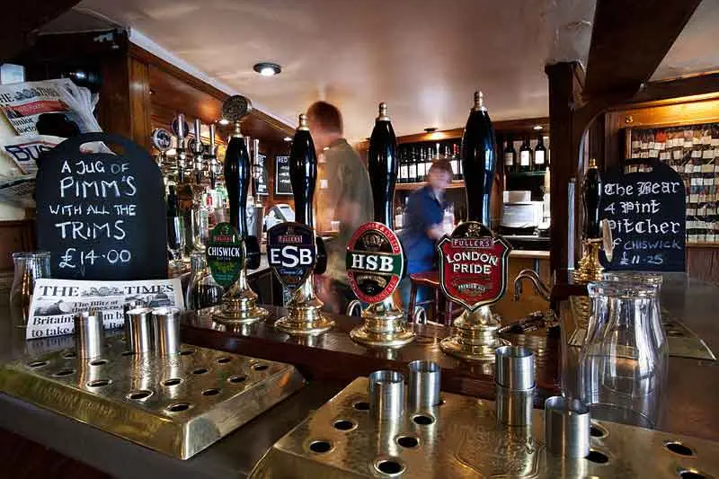

Round-buying is the reciprocal exchange of drinks. In Britain, as elsewhere, drinking is essentially a social activity. Wherever you come from, you will probably be familiar with a practice similar to round-buying, as drinking involves some form of sharing or reciprocal giving in most societies. This is because in all cultures around the world, the ritual practices and etiquettes associated with drinking are designed to promote friendly social interaction - although the naturally reserved British are perhaps more in need of help in this context than other nations.
Reciprocal drink-giving itself is by no means a uniquely British custom. What is perhaps uniquely British, and often baffling to foreigners, is the immense, almost religious significance attached to this practice in British pubs.
1. In any group of two or more people, one person buys a ‘round’ of drinks for the whole group.
2. This is not an act of altruism. The expectation is that the other member or members of the group will each, in turn, buy a round of drinks.
3. When each member of the group has bought a round, the whole process begins again with the first member.
4. If the group is seated away from the bar, the person who buys the round acts as ‘waiter’. ‘Buying your round’ involves not only paying for the drinks, but going to the bar, ordering the drinks and carrying them back to the table.
1. In very large groups, traditional round-buying would be prohibitively expensive. This is usually no excuse for abandoning the sacred ritual, however: what generally happens is that the large group divides into smaller sub-groups, each of which engages in the normal round-buying process. Alternatively, a large group may have a ‘whip round’, collecting a relatively small sum of money from each individual to put into a ‘kitty’, which is then used to buy rounds of drinks. In some cases, members of very large groups will agree to purchase drinks individually - you may see this occasionally among students and others on low incomes - but sub-groups and kitties are the more common solutions.
2. In some social circles, couples are treated as one person in the round-buying ritual, in that only the male is expected to ‘buy his round’. This variation is extremely rare among younger pubgoers: if you witness it, you can be almost certain that at least the males involved are over 40.
3. Women generally have less reverence for the round-buying ritual than men. In mixed-sex groups, they tend to humour their male companions by adhering to prescribed etiquette, but in all-female groups you may see all sorts of strange variations and exceptions to the usual practice. (Sex-differences in round-buying and other aspects of pub etiquette are explained in more detail in Chapter 7, The Opposite Sex)